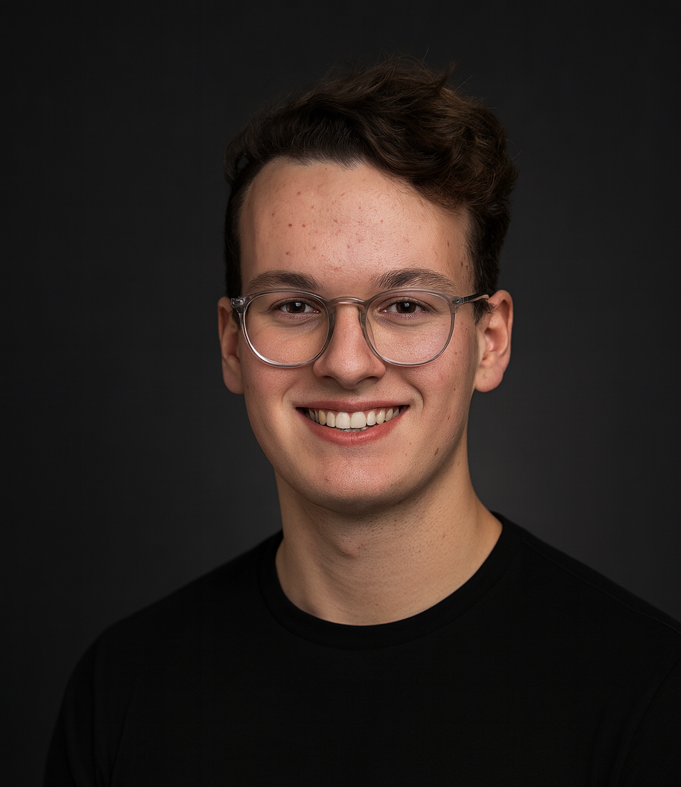

Manuel Asbeck,
Founder and Managing Director.
Manuel founded Flits and leads the company as Managing Director.
Based between Munich and the wider European company-building circuit.

Manuel Asbeck
Manuel Asbeck founded Flits in 2023 and serves as its Managing Director and sole shareholder. He is twenty years old, based between the Munich Area and London, and studies Information Systems at the Technical University of Munich.
Flits grew from a simple conviction: that the best digital companies are built with patience, and that the work of a young founder deserves a permanent home rather than a graveyard of abandoned projects. Manuel started building software at twelve years old. By the time he founded Flits, he had already shipped several consumer apps, learned what it takes to grow them, and developed a clear view of what separates ventures worth keeping from ones worth letting go.
Today, Flits operates as a holding for a small family of digital products and ventures — built, owned, and stewarded for the long term. Manuel leads all formation, operational, and strategic decisions across the portfolio. He thinks in years, not quarters, and is drawn to businesses where compounding is possible: software with loyal users, products that improve with time, and assets that reward patience.
He is actively involved in every company under the Flits umbrella — not as a passive owner, but as the person responsible for building them into something worth owning.